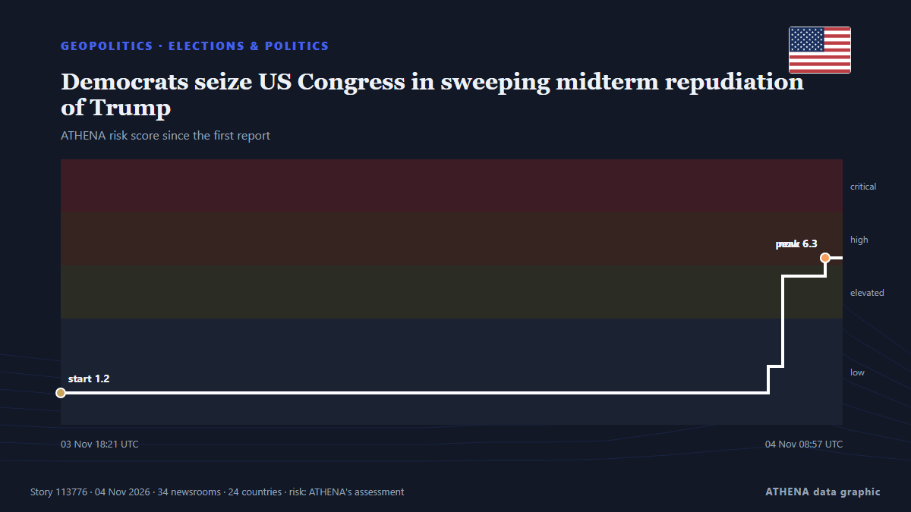

Геополитика
Геополитический риск сегодня
Последние 24 часа — событий: 264, стран: 74. Наибольший риск сейчас: 7.6 — Trump acknowledges Iran played role in Republican midterm losses.

ГеополитикаDemocrats seize US Congress in sweeping midterm repudiation of Trump
Democrats are preparing to launch a flurry of investigations into President Donald Trump’s administration and business dealings if they retake one or both chambers of Congress, devising strategies to… из France 24 English
| 22 окт. | 75 |
|---|---|
| 23 окт. | 84 |
| 24 окт. | 56 |
| 25 окт. | 94 |
| 26 окт. | 154 |
| 27 окт. | 147 |
| 28 окт. | 110 |
| 29 окт. | 104 |
| 30 окт. | 123 |
| 31 окт. | 87 |
| 1 нояб. | 94 |
| 2 нояб. | 144 |
| 3 нояб. | 127 |
| 4 нояб. | 35 |
Мониторинг
Последнее
Russia hails Trump waiving sanctions as 'historic'
Trump’s executive order comes as he has been warming towards Russia. из The Straits Times
Houthis Claim Attacks on Saudi Arabia’s East-West Oil Pipeline
The Iran-backed Houthis on Monday claimed they attacked pumping stations along Saudi Arabia’s East-West onshore oil pipeline, the Kingdom’s key crude export route bypassing the Strait of Hormuz. из OilPrice.com
'We did it': Abdul El-Sayed makes history as first Muslim elected to US Senate
Democrat Abdul El-Sayed won Michigan's US Senate race over former Republican lawmaker Mike Rogers, US networks said early Wednesday, making him the first Muslim elected to the upper chamber of… из IOL
Trump Fires White House Press Secretary Katie Zacharia After Just 5 Days
Donald Trump dismissed new White House Press Secretary Katie Zacharia on Friday, Oct. из Kyiv Post
US strikes Iran’s Qeshm island – Report
The US has not publicly announced the attacks, so as not to signal any intention of resuming major combat operations, the Wall Street Journal reported. из CNA (Channel NewsAsia)
Flavio Bolsonaro flees Brazil through Argentina and lands in Miami
According to a report by Folha de S.Paulo, the politician was dissuaded from seeking to challenge the voting legitimacy by his lawyers and key allies. из TASS (English)
Evacuations begin in Ukraine under localized ceasefire brokered by Melania Trump
Residents of the Russian-occupied Ukrainian town have reported a worsening food crisis since 2022. из Express Tribune
The facts about Brazil's president Lula da Silva
Flávio Bolsonaro, the son of the former president who was jailed over a coup plot, could be on the cusp of winning Brazil’s presidency. из The New York Times (World)
Rubio says US yet to decide on new Iran strikes
ATLANTA: US President Donald Trump has not made a decision about fresh strikes on Iran amid stalled peace talks, US Secretary of State Marco Rubio said Saturday. из Business Recorder
Trump administration illegally fired James Comey's daughter, judge rules
Maurene Comey believes she was let go from her job as a federal prosecutor because her father is the former FBI director. из BBC News
Trump says US ending $3.8 bn in annual aid for Israel
Says democrats, left-wing politicians using US financial support to Israel as a talking point to criticise Republicans. из Express Tribune